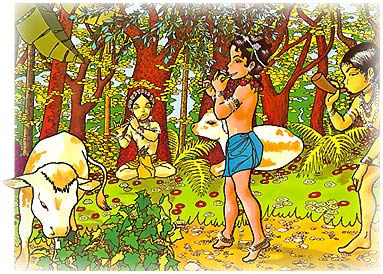

Algunos de los niños agarraban las colas de los monos
que colgaban de los árboles. Otros niños subian a los
árboles para hacerles muecas a los monos, o para
saltar de una rama a otra.
Algunos tocaban las flautas o tocaban sus trompetas de
cuerno de bufalo, algunos cantaban con la música de
las abejas. Algunos seguian a los cisnes, y otros
corrian detrás de la sombra de las aves.
